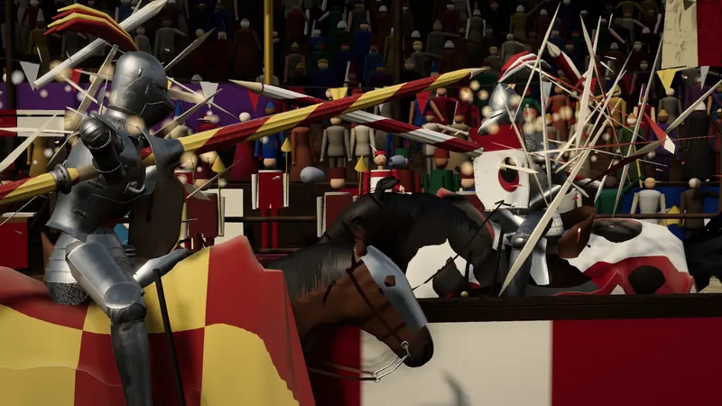

Realism · Physics & motion
Measured, not guessed
We tracked twenty real jousting videos frame by frame and measured what a lance and a rider actually do at the moment of the strike.
- Lances that bow, crack and splinter; hit reactions that follow where the point lands; real falls Live
- Measured: a lance bows for about a quarter of a second before it breaks; an unhorsed rider is on the sand 0.85 to 1.3 seconds after the blow
- Physics overhaul tuned to those numbers In development